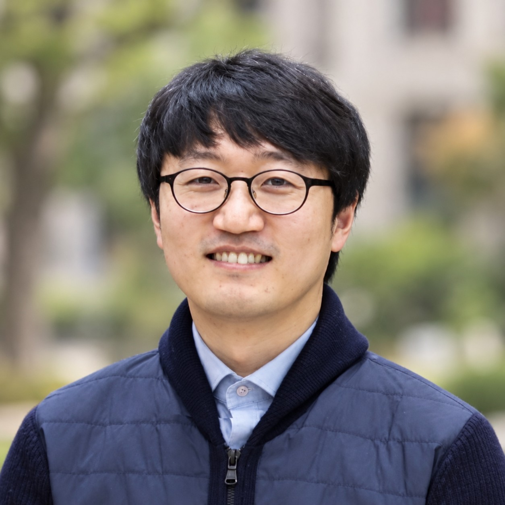

02/2026

Principal Investigator
Prof. Seunghwa Lee
Associate Professor
Department of Chemical and Biological Engineering
Sookmyung Women’s University
Electrocatalysis
Electrochemical Interfaces
Operando Spectroscopy
Sustainable Energy Conversion
“There Is No Secret Ingredient” - Mr. Ping (Kung Fu Panda)
01
Education & Research Experiences
Academic training and research appointments, shown in reverse chronological order.
09/2026 – Present
Associate Professor
Department of Chemical and Biological Engineering, Sookmyung Women’s University
04/2026 – 08/2026
Associate Professor
Department of Chemical Engineering, Changwon National University
03/2022 – 03/2026
Assistant Professor
Department of Chemical Engineering, Changwon National University
11/2017 – 02/2022
Post-Doctoral Researcher
Group of Prof. Xile Hu, EPFL
Research topic: “Fundamentals and Applications of Inorganic Oxygen Evolution Catalysts.”
03/2014 – 08/2017
Ph.D., Gwangju Institute of Science and Technology (GIST)
Supervisor: Prof. Dr. Jaeyoung Lee
Thesis: “Insight into electrochemical conversion of CO₂ to multi-carbon fuels on Cu-based electrode.”
08/2014
Visiting Scientist, Catalysis Research Center
Hokkaido University, Japan · Prof. Masatoshi Osawa
Research on Surface Enhanced Infrared Absorption Spectroscopy (SEIRAS) coupled with electrocatalysis.
03/2012 – 02/2014
M.Sc., Gwangju Institute of Science and Technology (GIST)
Supervisor: Prof. Dr. Jaeyoung Lee
Thesis: “Electrochemical conversion of gas-phase CO₂ to formic acid on SnO₂ electrode.”
02/2006 – 02/2012
B.E., Inha University
Advisor: Prof. Geon Joong Kim
Final-year project: “Microwave system for drying food-wastes.”
02
Awards & Honors
Selected awards, fellowships, and scholarships listed in the curriculum vitae.
04/2019 – 03/2021
Marie Skłodowska-Curie Actions
European Commission · €203,149.44 total.
12/2016
Top Student
School of Environmental Science and Engineering, GIST.
03/2015 – 08/2017
Global Ph.D. Fellowship Program
National Research Foundation of Korea · ₩30,000,000/year.
03/2012 – 08/2017
Full Korean Government Scholarship
Gwangju Institute of Science and Technology (GIST).
08/2010
LG Chemistry Award
Prior art research division of the 2010 Campus Patent Strategy Universiade.